MTD API Endpoint Mappings to DES
Contents
- MTD-BISS-to-DES
- MTD-BSAS-to-DES
- MTD-CIS-deductions-to-DES
- MTD-accounts-SA-to-DES
- MTD-business-details-to-DES
- MTD-ind-calculations-to-DES
- MTD-ind-d-to-DES
- MTD-ind-deductions-to-DES
- MTD-ind-expenses-to-DES
- MTD-ind-income-rcvd-to-DES
- MTD-ind-losses-to-DES
- MTD-ind-reliefs-to-DES
- MTD-ind-state-benefits-to-DES
- MTD-obligations-DES
- MTD-self-assessment-to-DES
MTD-BISS-to-DES
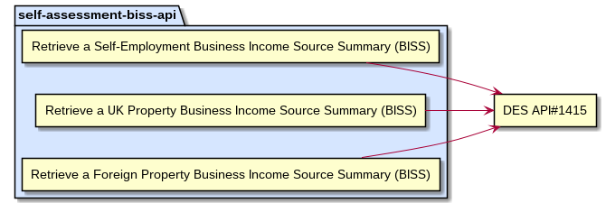MTD-BISS-to-DES
MTD-BSAS-to-DES
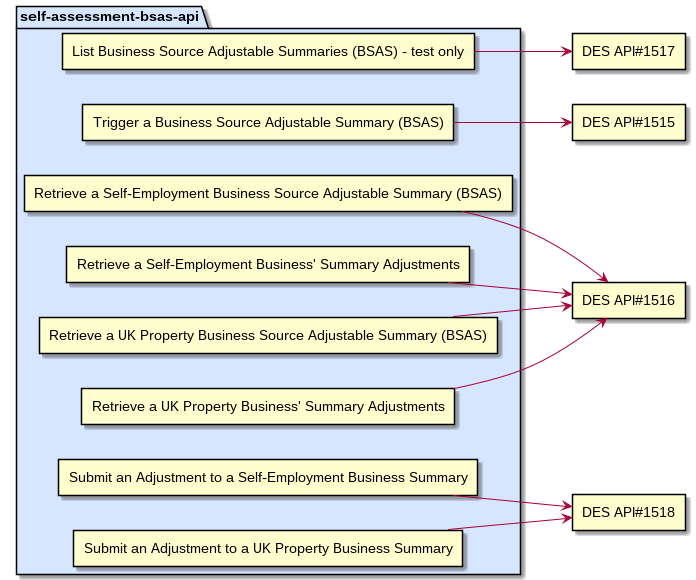MTD-BSAS-to-DES
MTD-CIS-deductions-to-DES
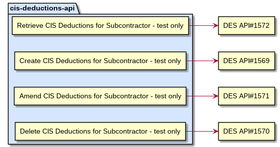MTD-CIS-deductions-to-DES
MTD-accounts-SA-to-DES
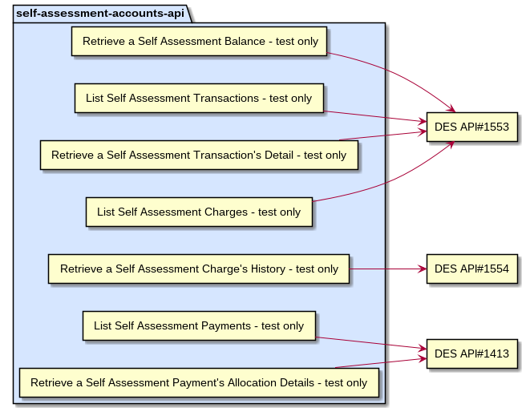MTD-accounts-SA-to-DES
MTD-business-details-to-DES
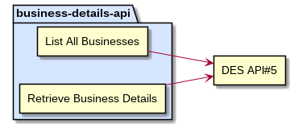MTD-business-details-to-DES
MTD-ind-calculations-to-DES
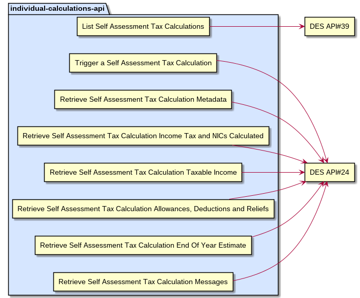MTD-ind-calculations-to-DES
MTD-ind-d-to-DES
MTD-ind-d-to-DES
MTD-ind-deductions-to-DES
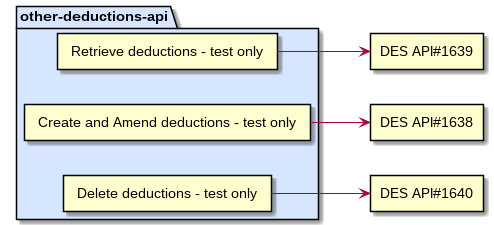MTD-ind-deductions-to-DES
MTD-ind-expenses-to-DES
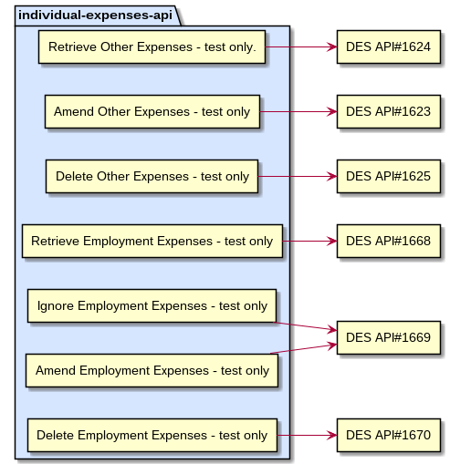MTD-ind-expenses-to-DES
MTD-ind-income-rcvd-to-DES
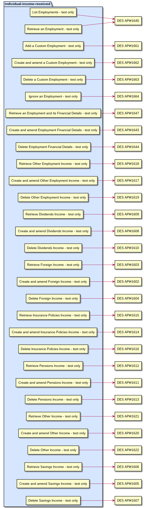MTD-ind-income-rcvd-to-DES
MTD-ind-losses-to-DES
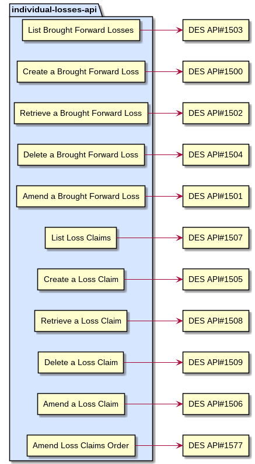MTD-ind-losses-to-DES
MTD-ind-reliefs-to-DES
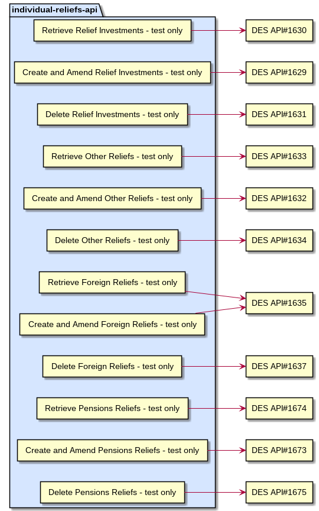MTD-ind-reliefs-to-DES
MTD-ind-state-benefits-to-DES
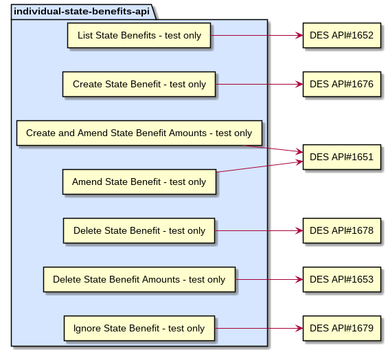MTD-ind-state-benefits-to-DES
MTD-obligations-DES
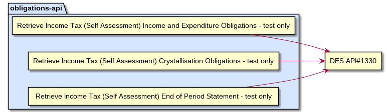MTD-obligations-DES
MTD-self-assessment-to-DES
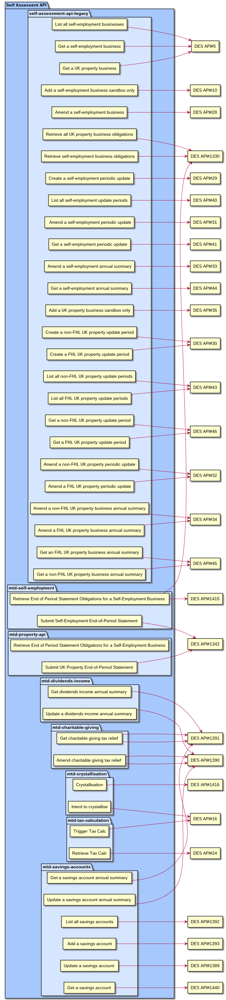MTD-self-assessment-to-DES